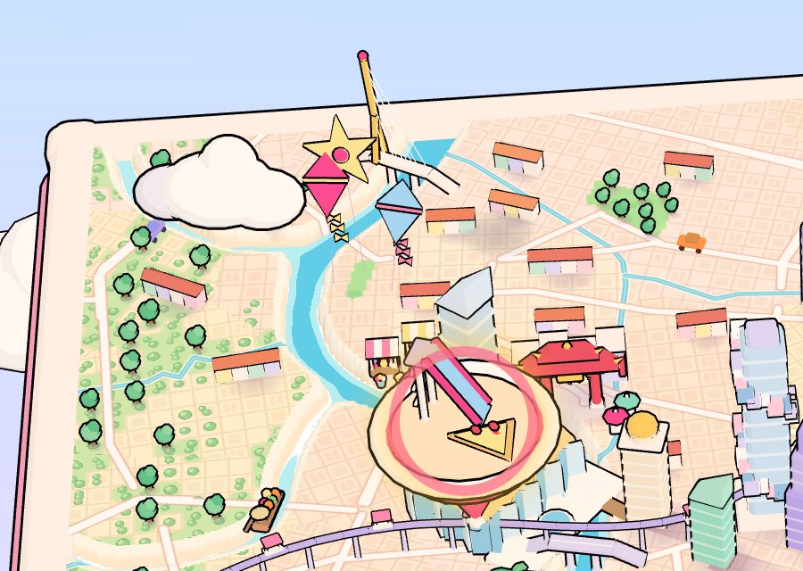
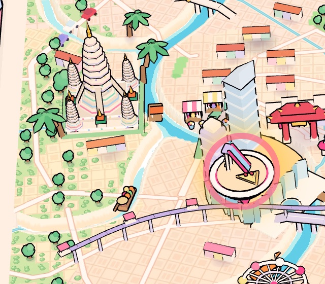
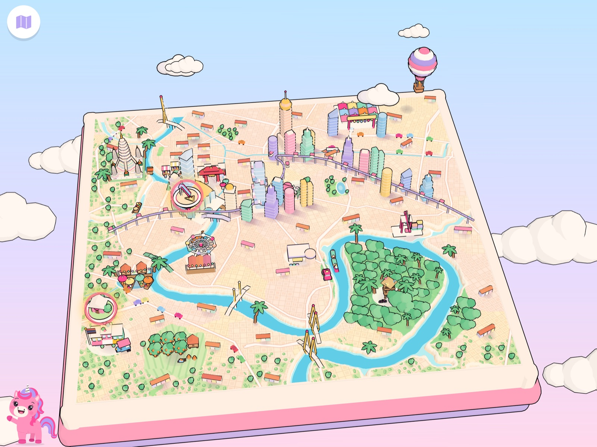
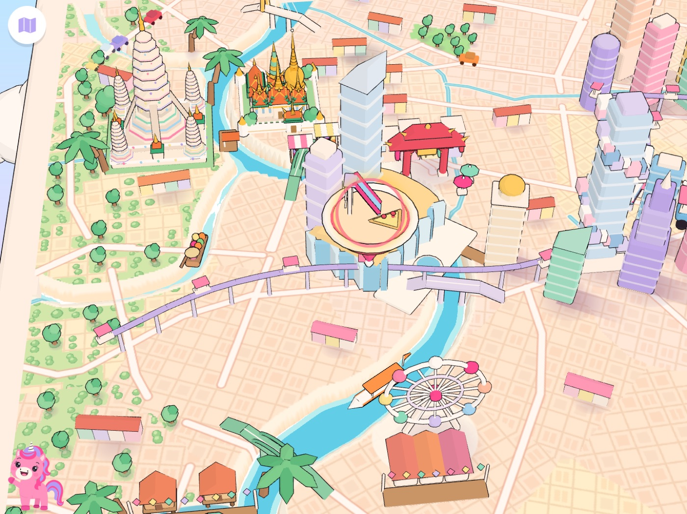
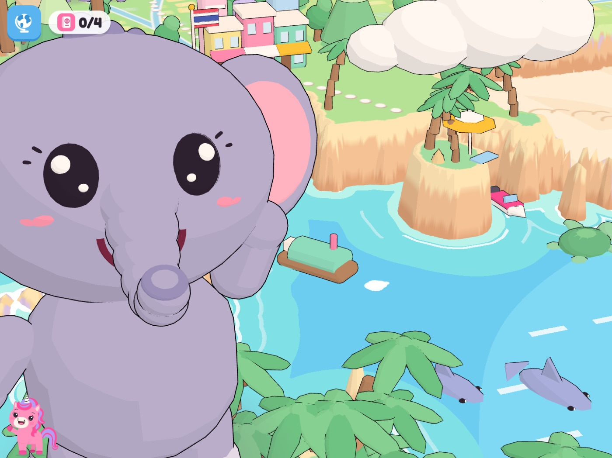
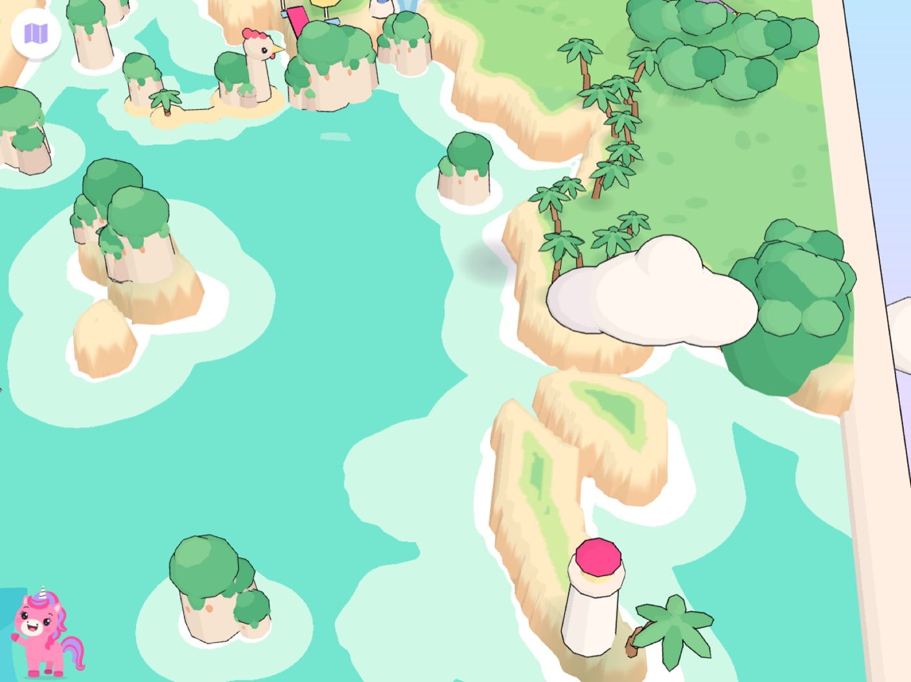

Bangkok map: Wat Arun, smaller pins, and zoom on every map
The Bangkok map now shows Wat Arun on the Thonburi bank. A tap names it: the light runs up its gold, a soft shimmer, and Sparkle says "Wat Arun, the Temple of Dawn! It sparkles with tiny pieces of colorful china." Nothing moves it. The kites and the Grand Palace are gone, and the two place pins are 40% smaller. On every Thailand map she can pinch in (iPad and iPhone) or pinch on a Mac trackpad or scroll, up to 2.5 times closer, toward the spot under her fingers. New sound: 1.5 s (the shimmer).
Before and after

Before
After



Listen
Wat Arun
Your call
Is 2.5x closer the right limit, or should it stop sooner?
Is Sparkle's Wat Arun line right, or would you word it differently?